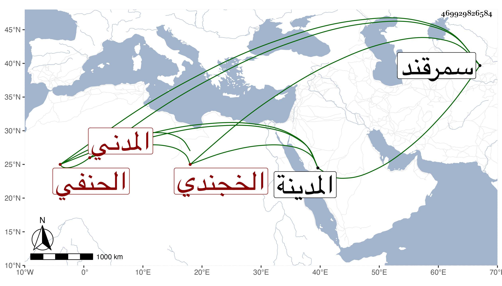

0902Sakhawi.DawLamic.ITO20230111-ara1.EIS1600.469929826584
Biography ID: 469929826584
أحمد بن طاهر بن أحمد بن محمد بن محمد جلال الدين بن الزين بن جلال الخجندي المدني الحنفي والد الشمس محمد الآتي ويعرف بابن جلال . ولد في يوم الاثنين حادي عشر المحرم سنة أربع وثمانمائة بالمدينة ونشأ بها فقرأ القرآن والعمدة وعرض على بعض الشيوخ بل سمع على الزين بن أبي بكر المراغي واشتغل يسيرا عند أبيه وعمه واعتنى بالأسفار وقضاء حوائج أخوانه ونحوهم ثم توجه إلى الحج وركب البحر فانقطع خبره ويقال أنه مات قبل الثمانين بنواحي سمرقند رحمه الله .
